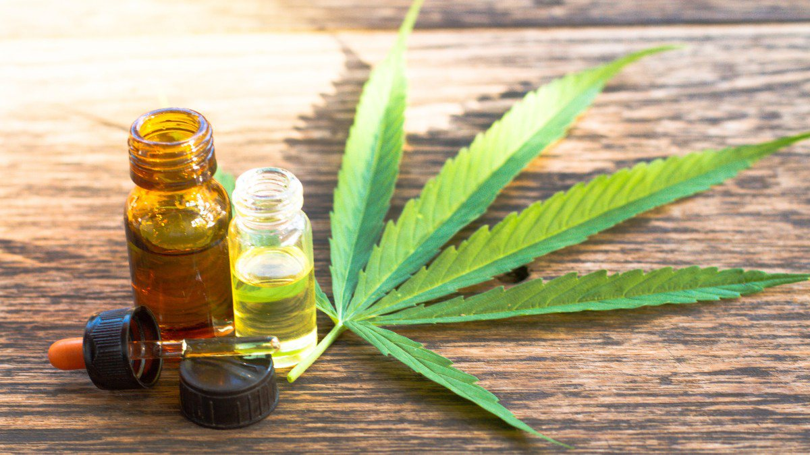

O que é?
O canabidiol (CBD) é um composto natural encontrado na planta de
cannabis. Tem sido estudado por seus potenciais benefícios terapêuticos
em uma ampla gama de condições médicas. O CBD não é psicoativo, o que
significa que não causa a sensação de "estar chapado" associada ao uso
da cannabis.
Quais os usos?
- Alívio da dor: O CBD tem sido estudado por seus efeitos analgésicos e pode ajudar a aliviar a dor associada a condições como artrite, dores de cabeça e dores musculares.
- Redução da ansiedade e depressão: Estudos sugerem que o CBD pode ajudar a reduzir os sintomas de ansiedade e depressão em pessoas que sofrem desses transtornos.
- Tratamento de convulsões: O CBD tem sido estudado como um tratamento potencial para convulsões em condições como a epilepsia.
- Redução da acne: O CBD pode ajudar a reduzir a inflamação e a produção de sebo, o que pode ajudar a reduzir a acne.
- Tratamento de distúrbios do sono: O CBD pode ajudar a melhorar a qualidade do sono em pessoas com distúrbios do sono, como a insônia.